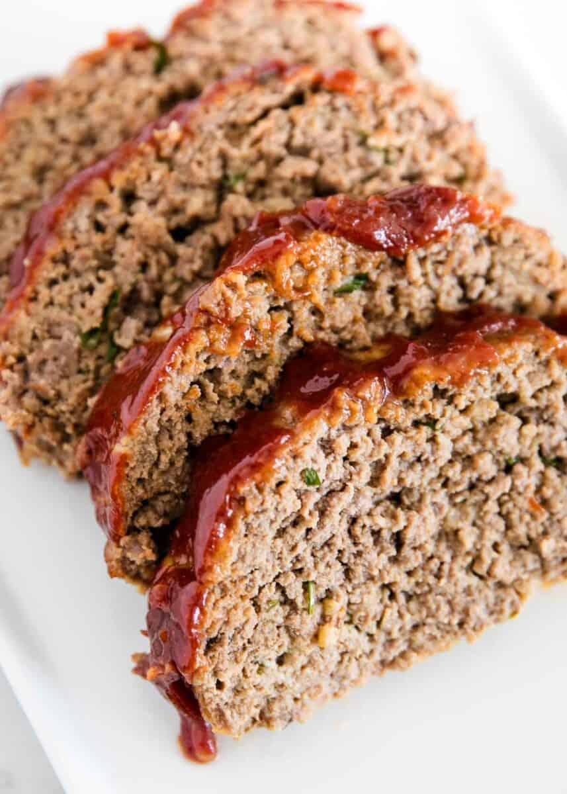

Easy Meatloaf

Description
The perfect weeknight dinner: quick, traditional, and easy. A timeless recipe that
satisfies any stomach.
Ingredients
For the meatloaf:
- 1 1/2lbs ground beef
- 1 chopped onion
- 1 cup milk
- 1 egg
- 1 cup bread crumbs
- salt and pepper
For the sauce:
- 1/3 cup ketchup
- 2 tbs brown sugar
- 2 tbs mustard
Instructions
- Preheat the oven to 350 degrees. Prepare the
loaf pan with grease.
- Mix the loaf ingredients in a bowl and then
transfer to the greased pan.
- Mix the sauce ingredients together in a small bowl
and then slather it evenly on top of the meatloaf.
- Bake for about hour until it is no longer pink inside.
Recommended Sides
- mashed potatoes
- green beans
- roasted carrots